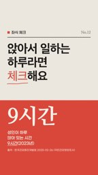
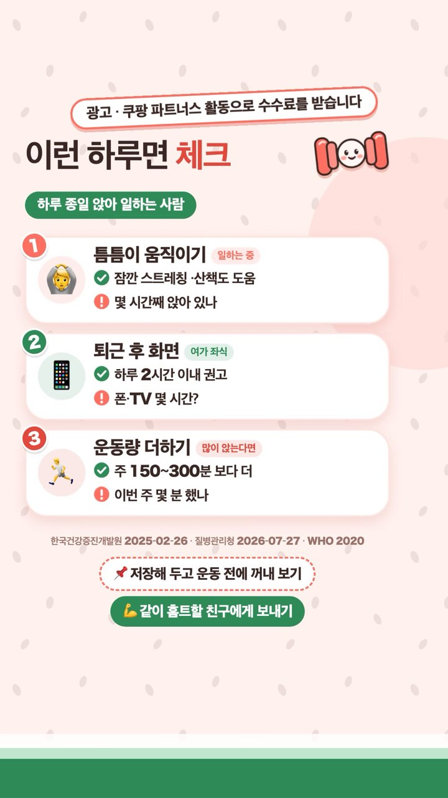

12번 영상
하루 9시간 앉는 우리 몸, 괜찮을까요?
쿠팡 링크는 아직 준비 중이에요. 아래 비교는 지금 바로 읽을 수 있어요.
종일 앉아 일한다면 체크 3개
성인이 하루 앉아 있는 시간 9시간(2023년) (한국건강증진개발원 2025-02-26 (국민건강영양조사))
이런 하루면 체크
하루 종일 앉아 일하는 사람
- 틈틈이 움직이기 (일하는 중)
- ✔ 잠깐 스트레칭 ·산책도 도움
- ⚠ 몇 시간째 앉아 있나
- 퇴근 후 화면 (여가 좌식)
- ✔ 하루 2시간 이내 권고
- ⚠ 폰·TV 몇 시간?
- 운동량 더하기 (많이 앉는다면)
- ✔ 주 150~300분 보다 더
- ⚠ 이번 주 몇 분 했나
한국건강증진개발원 2025-02-26 · 질병관리청 2026-07-27 · WHO 2020
